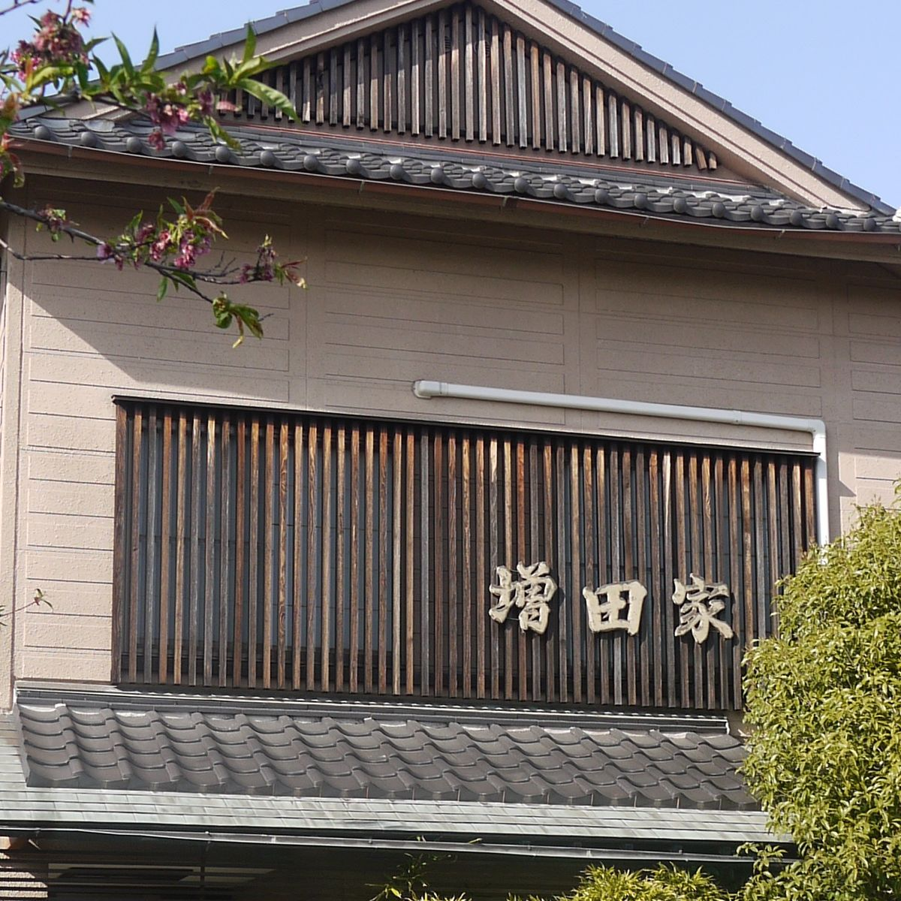
火を入れるのは、ご注文のあとに。
古河市大手町の、うなぎ屋でございます。お食事に、ご宴会に、出前に。
11:00〜14:00／17:00〜20:00
木曜定休
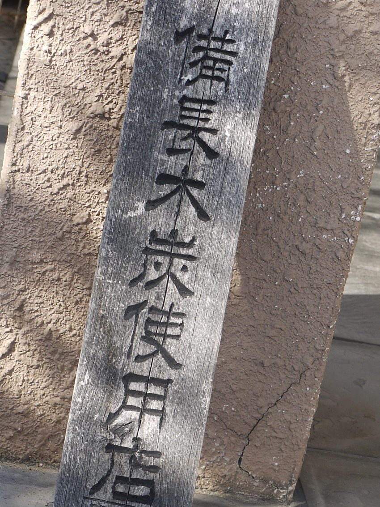
うなぎは、ご注文をいただいてから蒸し、備長炭でじっくりと焼き上げております。
うな重は、上・特上・極上の三段でご用意しております。肝吸いとお新香を添えてお出しします。
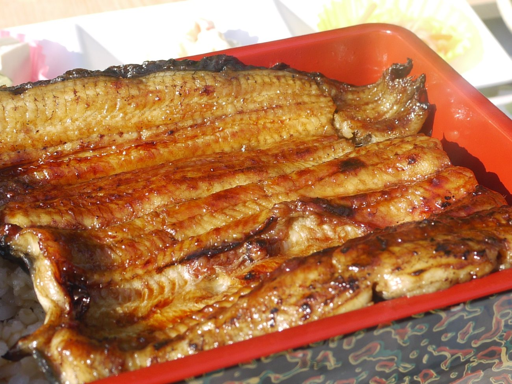
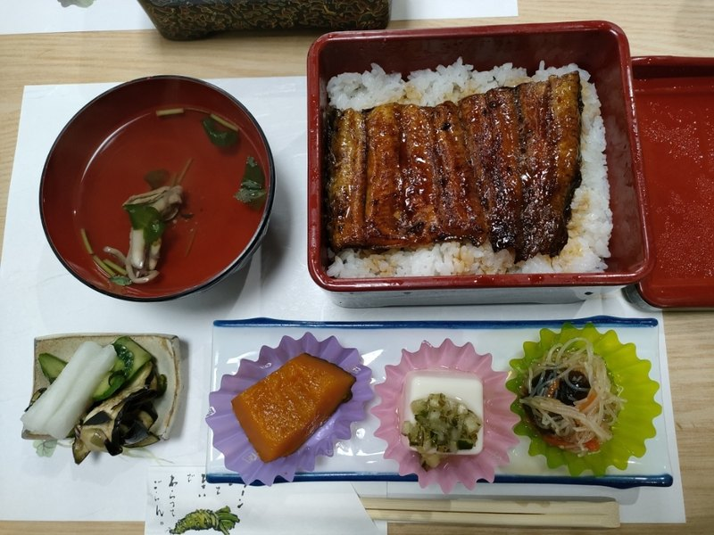
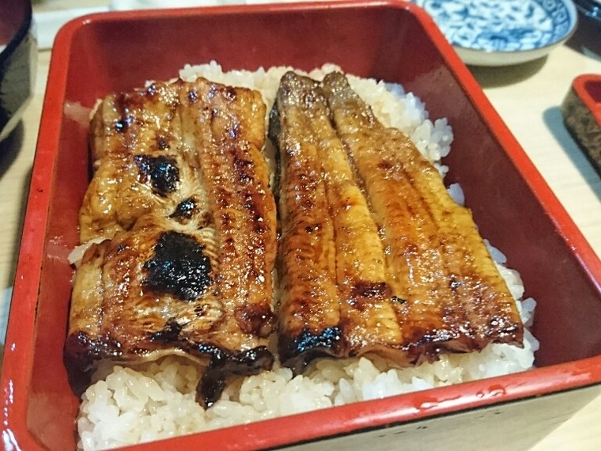
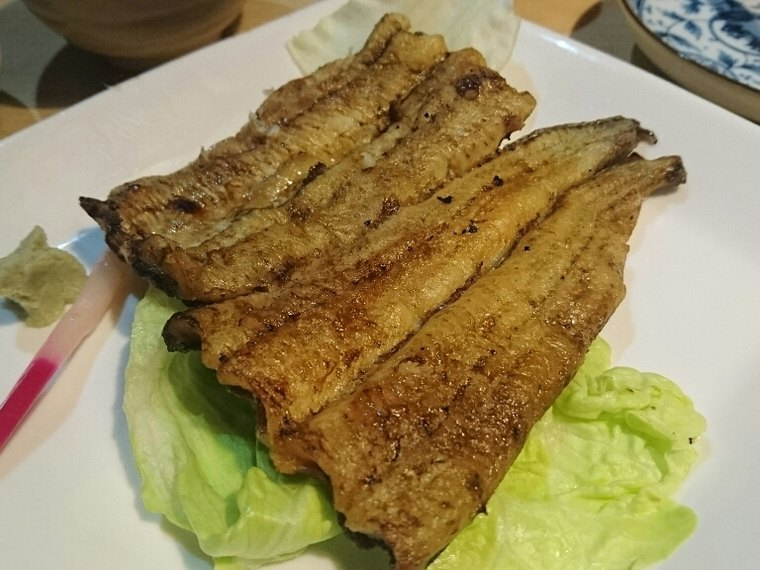
お重のほかに、蒲焼と白焼きも上・特上でご用意しております。たれをつけずに焼き上げる白焼きは、お酒のお供にどうぞ。
うなぎのほかに、天重（並・上・特上）もご用意しております。
座敷と小上がり、2名様から8名様までの個室がございます。ご家族のお食事から、大小のご宴会まで承ります。
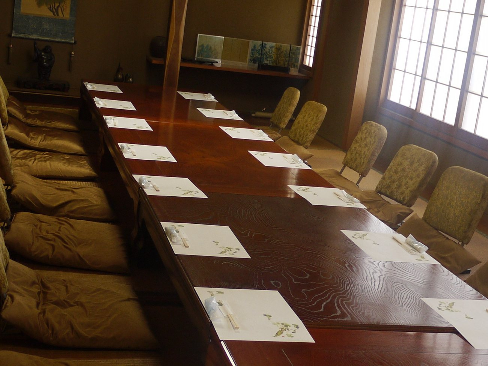
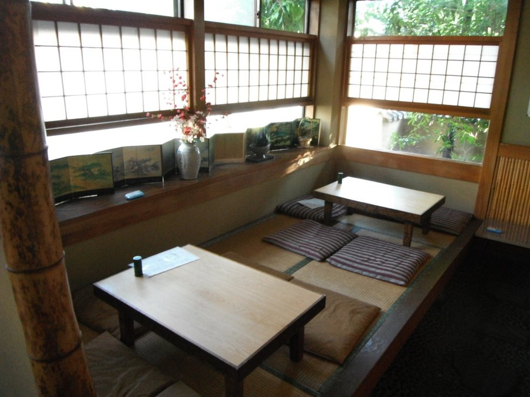
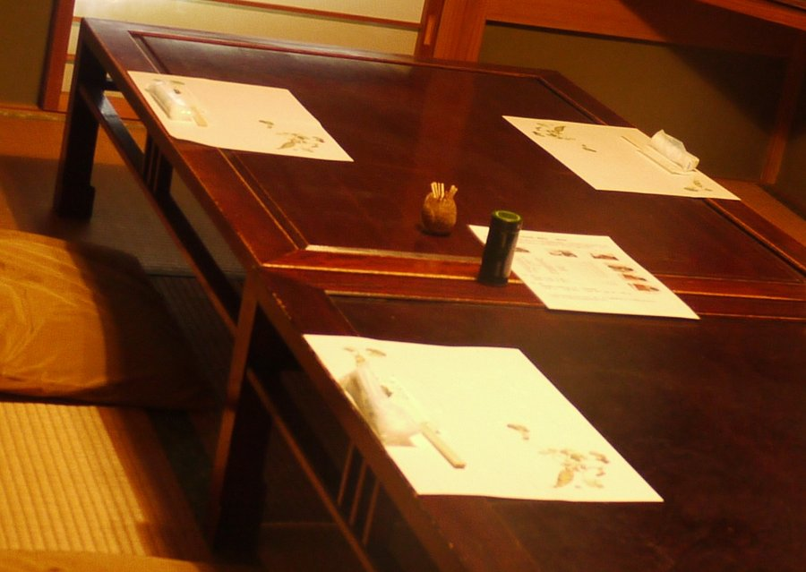
個室・ご宴会は、ご人数とご予算をお電話でお知らせください。
明治三十五年、初代の山本アサが川魚料理店として当店を開きました。以来、代々受け継いできた秘伝のたれと炭火で、うなぎを肉厚に、柔らかく焼き上げております。百年を超えて伝えてきた職人の技を、どうぞご堪能ください。これからも伝統に現代の味覚を加えながら、精進してまいります。皆様のお引き立てを、どうぞよろしくお願いいたします。
店主
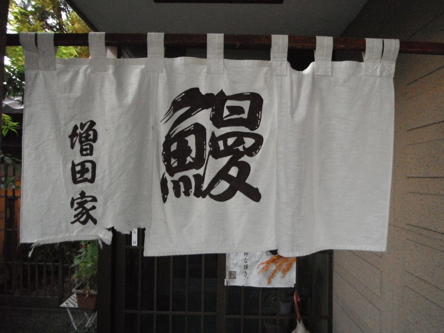
「明治創業の鰻屋さん。……ご飯も、そのうなぎに合わせて炊いているとのこと。」
Retty（2024年3月）「老舗のうなぎ屋さんに行ってきました。特上をいただきましたが、とても美味しかったです。……また行きたいと思えるお店でした。」
食べログ（2022年12月）「うなぎは表面がぱりっと焼かれて香ばしく、タレは甘すぎず私の好みでした。」
ぐるなび店でお出ししているうな重と天重を、そのままお届けしております。
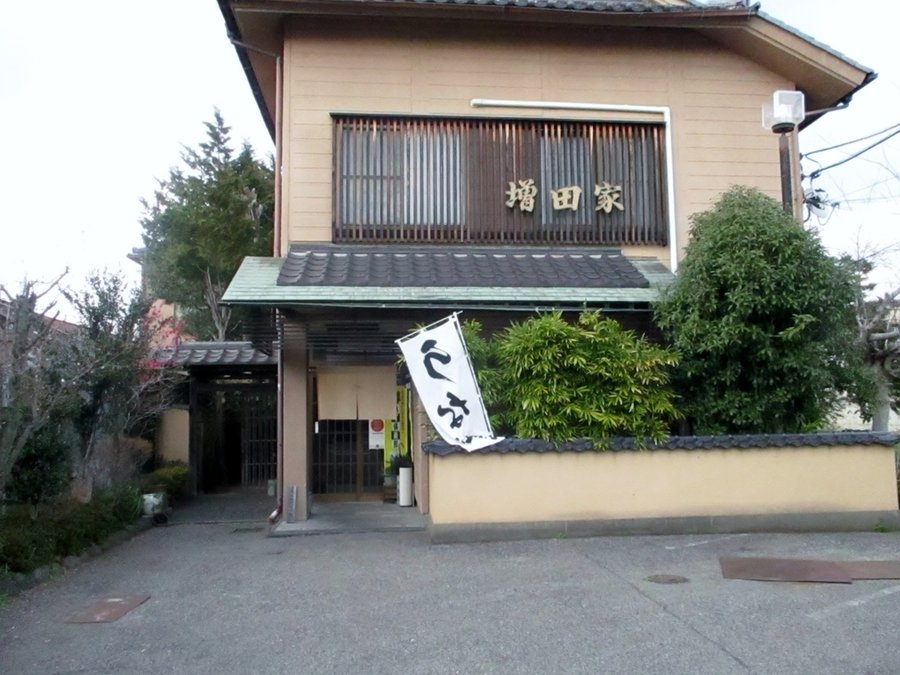
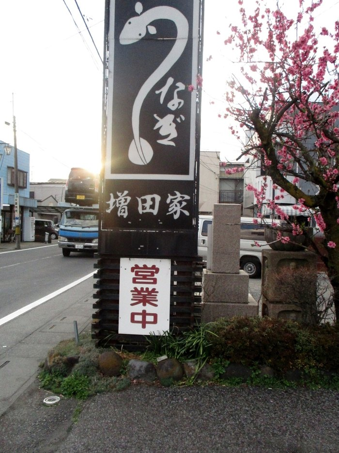